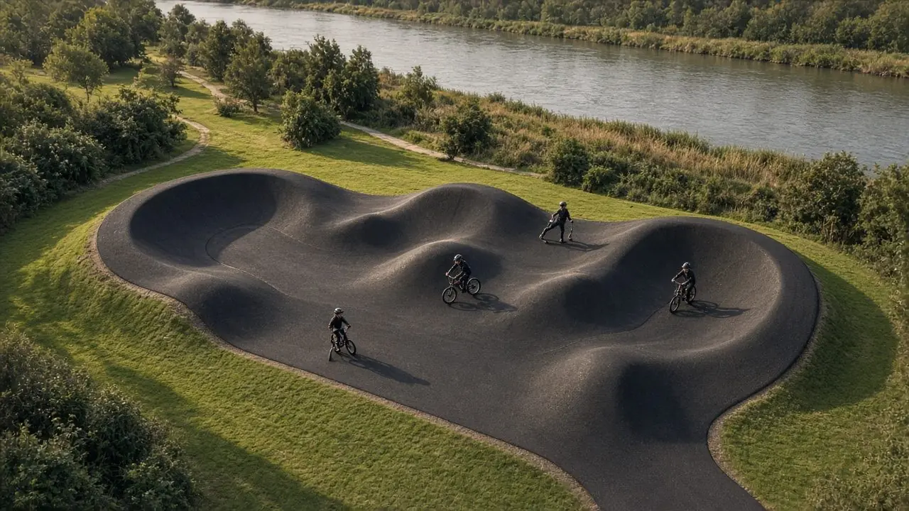
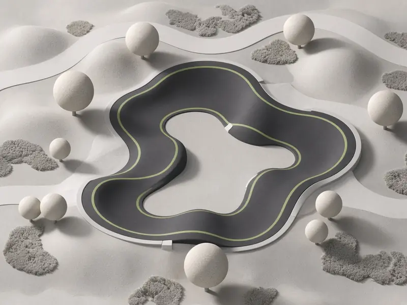
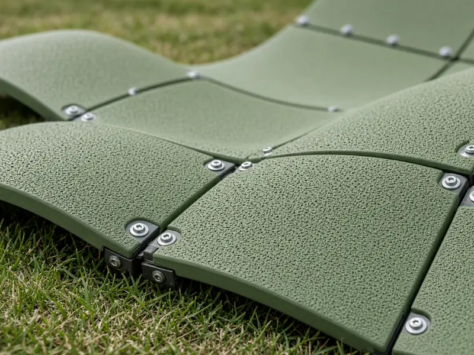
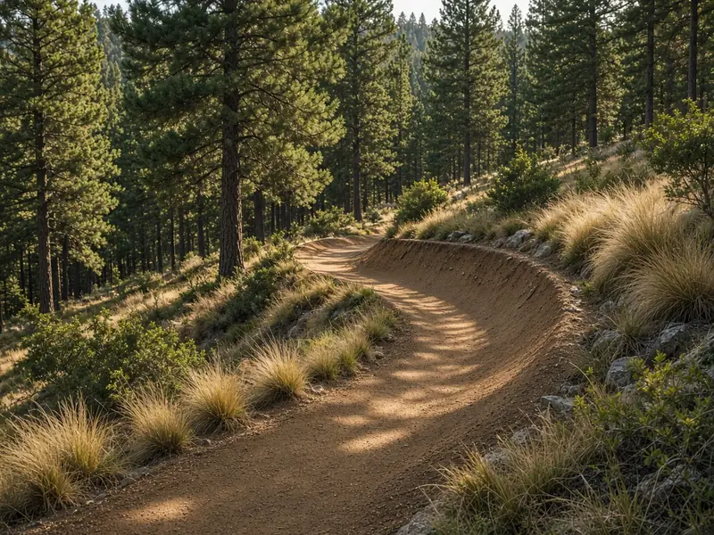
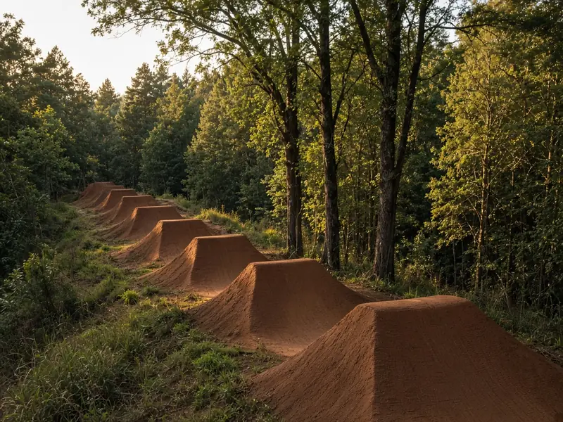
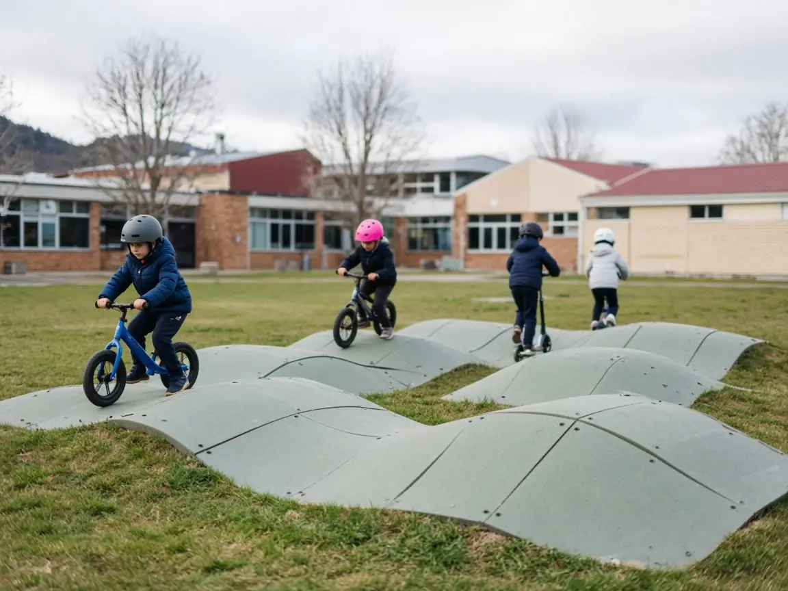
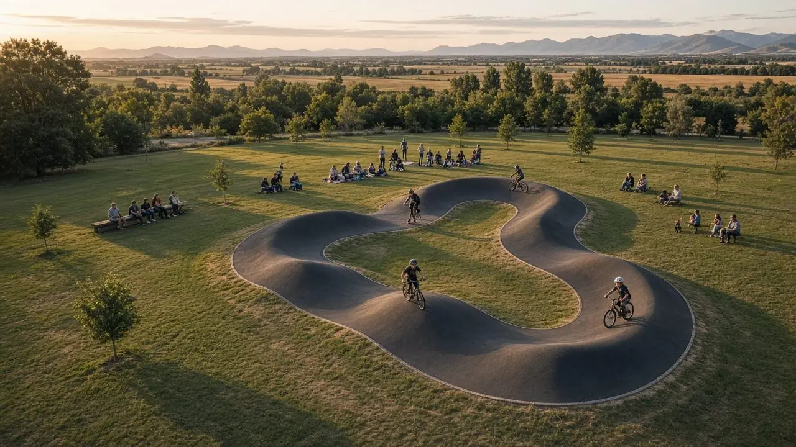
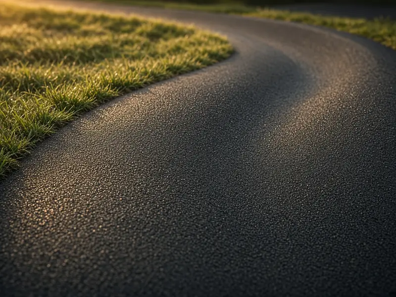
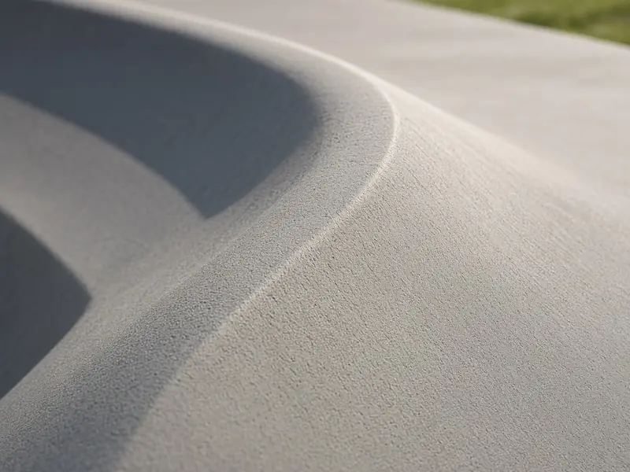

◐
For every age & wheel
Balance bikes, scooters, skateboards, wheelchairs, BMX and MTB share one surface. Lines scale from gentle to fast.
Pump track builders · Christchurch · Canterbury · South Island
Flowline handles pump track design and construction for councils and schools — asphalt, concrete and modular pump tracks, plus bike parks, skills tracks and trails — that get whole communities moving, from first-time scooters to BMX regulars.
Why pump tracks
A pump track is a looped circuit of rollers (bumps), berms (banked corners) and the transitions between them, ridden without pedalling — you "pump" your body to gain speed. It's inclusive, low-maintenance and used from dawn until the streetlights come on.
Balance bikes, scooters, skateboards, wheelchairs, BMX and MTB share one surface. Lines scale from gentle to fast.
Continuous, self-paced movement builds balance, coordination and confidence — and it's genuinely fun, so kids come back.
Tracks become meeting places. Councils see higher park use, more passive surveillance and fewer issues after dark.
Sealed asphalt and concrete tracks need minimal upkeep — a sweep and periodic inspection, not constant reshaping.
For schools: PE, wheel-skills programmes, physics of motion and student co-design of the layout.
From a 60 m learn-to-ride loop in a school corner to a 500 m+ destination track in a regional reserve. We design to your space.
Services
One team for the whole journey — from the first concept design for a council report to the last sweep of a finished track.

Turnkey asphalt and concrete pump tracks, designed for your site and built by our own crew — earthworks, shaping, drainage and sealing.
Estimate a track →
2D layouts, 3D concept designs and flythroughs that bring your idea to life when presenting to council, land owners, boards and funders.
Request a concept →
Composite modular pump tracks to buy or hire. Portable, expandable and quick to install — move it between neighbourhoods, schools or events.
Compare surfaces →
Bike park design and mountain bike trail building, from flowing singletrack to full bike park masterplans that fit the landscape.
Talk trails →
Hand-shaped dirt jumps and progressive jump lines with clear start points and safe run-outs, built to suit local riders and clubs.
Plan a jump line →
School bike tracks, learn-to-ride loops and skills parks that fit Bikes in Schools programmes, playground spaces and PE lessons.
Plan a school track →
Community and student consultation, council reports, drawings and cost breakdowns that make funding applications easier to win.
See FAQ →
Inspections, repairs, resurfacing and upgrades for existing pump tracks, BMX tracks and trails — including tracks we didn't build.
Book an inspection →Surfaces
The classic asphalt pump track. Smooth, quiet and fast with a forgiving feel. Ideal for council parks and multi-use community tracks.

Sculpted, crisp lines and exceptional longevity. Our pick for high-use sites, coastal exposure and architectural landscapes.
Prefabricated composite sections that bolt together. A portable, relocatable pump track — buy it or hire it for schools, trials and events.
Process
We walk the site with your team, check levels, drainage, access and services, and listen to who'll be riding.
2D and 3D concept designs and a flythrough — ideal for council reports, land owners, board meetings, funding bids and student consultation.
Drawings, specifications and cost breakdowns to support consents and community funding applications.
Earthworks, shaping and sealing by our own crew, with a safe, fenced site and regular updates for neighbours.
Safety sign-off, signage, a maintenance plan and an optional opening-day skills session with local riders.
Instant estimator
Search an address and draw your track once — a closed loop or an open line, extra lines welcome. Then flip the build type as often as you like: Track only prices the line × your chosen width; Fill in prices the whole area inside the loop. You'll see the surfaced m² and an indicative price range.
Next step
We'll meet you on site, check the ground and talk through options, budget and funding. No cost, no obligation for Canterbury councils and schools.
Your estimate
Selected work Demo content
Illustrative concept projects for this demo, shown with AI-generated imagery — not real builds.
FAQ
Pump track cost, design, hire and more. Can't see yours? Ask us on the site visit.
A sealed or modular loop of rollers, berms and transitions that riders move around by pumping — pushing and pulling with their body — rather than pedalling. Bikes, BMX, scooters, skateboards and wheelchairs can all use one.
It's about track length more than land area. A compact school loop is around 60–150 m of track, community tracks 150–300 m, and destination tracks 500 m and up — usually 1.5 m wide (0.5–2.0 m is possible), laid out in a footprint a few times larger. Or choose a fully surfaced "fill in" track. The estimator shows length and a size category as you draw.
We price the surfaced area at $400–$600 per m², excl. GST. Choose Track only (only the riding line is surfaced: length × width, typically 1.5 m) or Fill in (the whole area, infield included, is surfaced). For example, 120 m of track at 1.5 m wide is 180 m² — roughly $72,000–$108,000. That covers design, earthworks, shaping and surfacing for a typical site; unusual ground, drainage, retaining, lighting, fencing or long access can move the price — we confirm everything after the site visit.
Asphalt suits most parks and is fast and quiet. Concrete lasts longest and allows sculpted features. Modular suits schools, temporary sites or where groundworks aren't possible. We'll recommend one after seeing the site.
Modular installs can take days. Sealed tracks typically take 4–10 weeks on site, depending on size, weather and curing. Design and consents usually come first.
Yes. We provide concept images, drawings and cost breakdowns that suit council long-term plans, community trusts and school fundraising.
Track only surfaces just the riding line — usually around 1.5 m wide — with grass or landscaping in between, which keeps cost down. Fill in surfaces the whole area, infield included, for a clean, low-maintenance, all-weather pad that's easy to sweep. The estimator prices both.
Yes. Composite modular pump tracks can be bought outright or hired for a term, event or trial, then moved to another park or school. It's a low-risk way to test demand before committing to a permanent asphalt or concrete track.
Yes. Alongside pump tracks we design and build mountain bike trails, jump lines, dirt jumps, skills parks and walking tracks for councils, clubs and land owners.
Yes. We design school bike tracks and learn-to-ride loops that suit Bikes in Schools programmes, from a compact playground loop to a full skills track.
We're based in Christchurch and build pump tracks across Canterbury — including Selwyn, Rolleston, Lincoln, Prebbleton and Waimakariri — and further afield in the South Island. See all areas we serve.
Yes. We inspect, repair and resurface existing pump tracks, BMX tracks and trails, and can provide an ongoing maintenance plan.
Our layouts include gentle beginner lines, clear sightlines and separated flow. We design to recognised guidance and provide safety signage and a maintenance plan at handover.